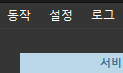
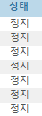
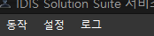
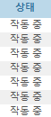

import datetime cnt = 0 StartButton = find (Pattern().similar(0.96).targetOffset(-9,4)) #시작 #popup("start") StopButton=find(Pattern().similar(0.96).targetOffset(-13,25)) #popup("stop") while True: while True: if cnt==1: # 모든서비스 정지 상태 if exists(): click(Pattern().similar(0.85).targetOffset(-68,7)) click(StartButton) #시작 cnt = 0 wait(180) break else: wait(1) else: #모든 서비스 동작상태 if exists(Pattern().similar(0.84)): click(Pattern().similar(0.85).targetOffset(-68,7)) click(StopButton) #종료 cnt = 1 wait(180) break else: wait(1) while True: count = 1 f = open("C:/a/b.txt",'a') if exists(Pattern().similar(0.85)): data = s + " icon 1ea \n" f.write(data) if exists(Pattern().similar(0.96)): # f = open("C:/a/b.txt",'a') data = s+ " icon 2ea \n" f.write(data) # f.close() if exists(Pattern().similar(0.96)): # f = open("C:/a/b.txt",'a') data = s + " icon 3ea \n" f.write(data) # f.close() if exists(Pattern().exact()): # f = open("C:/a/b.txt",'a') today = datetime.datetime.now() s = str(today) data = s + " icon 4ea complete! \n" f.write(data) f.close() count = count +1 break else: wait(1) # f = open("C:/a/b.txt",'a') today = datetime.datetime.now() s = str(today) data = s + " Final fail \n" f.write(data) f.close() else: wait(1) # f = open("C:/a/b.txt",'a') today = datetime.datetime.now() s = str(today) data = s + " 4fail \n" f.write(data) # f.close() else: wait(1) # f = open("C:/a/b.txt",'a') today = datetime.datetime.now() s = str(today) data = s + " 3fail \n" f.write(data) # f.close() else: wait(1) # f = open("C:/a/b.txt",'a') today = datetime.datetime.now() s = str(today) data = s + " 2fail \n" f.write(data) # f.close()